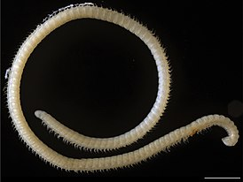

- Домен: Эукариоты
- Царство: Животные
- Подцарство: Эуметазои
- Двусторонне-симметричные
- Первичноротые
- Линяющие
- Panarthropoda
- Тип: Членистоногие
- Подтип: Трахейнодышащие
- Надкласс: Многоножки
Основная часть
Даже абзац есть
- Нумерованный
- Список
- Который
- Будет
- Удален
░░░░░░░░░░░░░░░░░░░░░░░░░░░░░░░░ ░░░░ЗАПУСКАЕМ░ГУСЕЙ-РАЗВЕДЧИКОВ░░░░ ░░░░░▄▀▀▀▄░░░▄▀▀▀▀▄░░░▄▀▀▀▄░░░░░ ▄███▀░◐░░░▌░▐0░░░░0▌░▐░░░◐░▀███▄ ░░░░▌░░░░░▐░▌░▐▀▀▌░▐░▌░░░░░▐░░░░ ░░░░▐░░░░░▐░▌░▌▒▒▐░▐░▌░░░░░▌░░░░
Первая ножка
В начале была Ножка, и Ножка была у Многоножки, и Ножка была Многоножка.
Вторая ножка
Ползет многоножка по лесу, видит - машина горит. Залезла в нее и сгорела
Классификация многоножек

Многоножки включают в себя четыре класса наземных членистоногих: симфил, губоногих, двупароногих и пауропод.
Губоногие стоят несколько обособленно от трёх остальных классов, которые образуют группу Progoneata.Все Progoneata характеризуются рядом специализированных черт строения , присущими только им. Например, половые протоки открываются вблизи переднего конца тела; при развитии зародыша желток оказывается не в кишечнике, а в полости тела (в дальнейшем богатые желтком клетки формируют жировое тело).
В пределах Progoneata чётко обособлена монофилетическая группа Collifera, включающая пауропод и двупарноногих. В пользу её монофилии говорят ряд синапоморфий: ротовых конечностей только две пары (мандибулы и гнатохилярий, представляющий собой продукт слияния первой пары максилл); сегмент второй пары максилл, в отличие от других многоножек, не несёт конечностей и не входит в состав головы, образуя шейку; половые отверстия парные и располагаются позади второй пары ходильных ног; личинки первого возраста имеют только три пары ног (по одной на сегмент), дальнейшее развитие идёт с увеличением числа сегментов, которые развиваются из зоны роста, расположенной позади трёх сегментов личинки.
Факты о многоножках
Строение
Длина многоножек колеблется в диапазоне от 2 мм до 35 см
Голова состоит из 4—5 сегментов. За головой расположено относительно однородно сегментированное туловище, не подразделенное на отделы, но с выраженной тенденцией к попарному слиянию сегментов.
Количество ног у разных видов варьирует от 10 и менее до рекордных 750 у Illacme plenipes.
Число ножек
Если на многоножку напал хищник, то она часто может убежать, пожертвовав несколькими ногами
Хотя многие многоножки вылупляются из яиц с полным набором пар ног, некоторые виды растут на протяжении всей жизни, увеличивая число ножек с каждой линькой.
Ареал обитания
Многоножки встречаются на каждом континенте, кроме Антарктиды. Наибольшее разнообразие имеют в тропической среде.
Питание
Большинство многоножек питаются разлагающейся органикой - упавшими листьями. Но губоногие ведут хищнический ночной образ жизни и питаются различными животными, включая амфибий, рептилий, млекопитающих, птиц и различных беспозвоночных.
Обыкновенная мухоловка
Кольчатая сколопендра

Каёмчатая клубовидка

Geophilus flavus

Illacme tobini